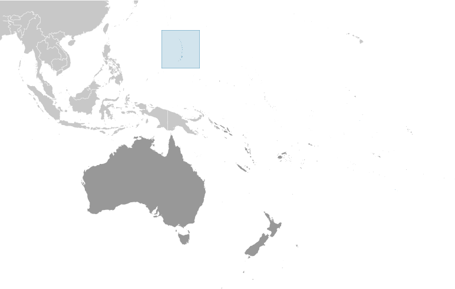
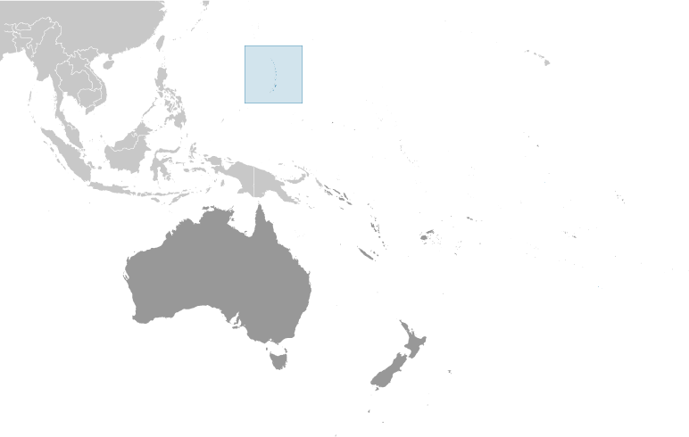

-
Introduction :: Northern Mariana Islands
-
Background:Under US administration as part of the UN Trust Territory of the Pacific, the people of the Northern Mariana Islands decided in the 1970s not to seek independence but instead to forge closer links with the US. Negotiations for territorial status began in 1972. A covenant to establish a commonwealth in political union with the US was approved in 1975, and came into force on 24 March 1976. A new government and constitution went into effect in 1978.
-
Geography :: Northern Mariana Islands
-
Location:Oceania, islands in the North Pacific Ocean, about three-quarters of the way from Hawaii to the PhilippinesGeographic coordinates:15 12 N, 145 45 EMap references:OceaniaArea:total: 464 sq kmland: 464 sq kmwater: 0 sq km
note: consists of 14 islands including Saipan, Rota, and Tinian
country comparison to the world: 197Area - comparative:2.5 times the size of Washington, DCLand boundaries:0 kmCoastline:1,482 kmMaritime claims:territorial sea: 12 nmexclusive economic zone: 200 nmClimate:tropical marine; moderated by northeast trade winds, little seasonal temperature variation; dry season December to June, rainy season July to OctoberTerrain:the southern islands in this north-south trending archipelago are limestone, with fringing coral reefs; the northern islands are volcanic, with active volcanoes on several islandsElevation:0 m lowest point: Pacific Ocean965 highest point: unnamed elevation on AgrihanNatural resources:arable land, fishLand use:agricultural land: 6.6% (2011 est.)arable land: 2.2% (2011 est.) / permanent crops: 2.2% (2011 est.) / permanent pasture: 2.2% (2011 est.)forest: 65.5% (2011 est.)other: 27.9% (2011 est.)Irrigated land:1 sq km (2012)Population distribution:approximately 90% of the population lives on the island of SaipanNatural hazards:active volcanoes on Pagan and Agrihan; typhoons (especially August to November)Environment - current issues:contamination of groundwater on Saipan may contribute to disease; clean-up of landfill; protection of endangered species conflicts with developmentGeography - note:strategic location in the North Pacific Ocean -
People and Society :: Northern Mariana Islands
-
Population:51,994 (July 2018 est.)country comparison to the world: 209Nationality:noun: NA (US citizens)adjective: NAEthnic groups:Asian 50% (includes Filipino 35.3%, Chinese 6.8%, Korean 4.2%, and other Asian 3.7%), Native Hawaiian or other Pacific Islander 34.9% (includes Chamorro 23.9%, Carolinian 4.6%, and other Native Hawaiian or Pacific Islander 6.4%), other 2.5%, two or more ethnicities or races 12.7% (2010 est.)Languages:Philippine languages 32.8%, Chamorro (official) 24.1%, English (official) 17%, other Pacific island languages 10.1%, Chinese 6.8%, other Asian languages 7.3%, other 1.9% (2010 est.)Religions:Christian (Roman Catholic majority, although traditional beliefs and taboos may still be found)Age structure:0-14 years: 26.17% (male 7,355 /female 6,252)15-24 years: 15.71% (male 4,365 /female 3,804)25-54 years: 39.14% (male 10,545 /female 9,805)55-64 years: 13% (male 3,701 /female 3,057)65 years and over: 5.98% (male 1,672 /female 1,438) (2018 est.)population pyramid:
 The World Factbook Field Image ModalAustralia - Oceania :: Northern Mariana Islands Print
The World Factbook Field Image ModalAustralia - Oceania :: Northern Mariana Islands Print Image DescriptionThis is the population pyramid for Northern Mariana Islands. A population pyramid illustrates the age and sex structure of a country's population and may provide insights about political and social stability, as well as economic development. The population is distributed along the horizontal axis, with males shown on the left and females on the right. The male and female populations are broken down into 5-year age groups represented as horizontal bars along the vertical axis, with the youngest age groups at the bottom and the oldest at the top. The shape of the population pyramid gradually evolves over time based on fertility, mortality, and international migration trends.
Image DescriptionThis is the population pyramid for Northern Mariana Islands. A population pyramid illustrates the age and sex structure of a country's population and may provide insights about political and social stability, as well as economic development. The population is distributed along the horizontal axis, with males shown on the left and females on the right. The male and female populations are broken down into 5-year age groups represented as horizontal bars along the vertical axis, with the youngest age groups at the bottom and the oldest at the top. The shape of the population pyramid gradually evolves over time based on fertility, mortality, and international migration trends.
For additional information, please see the entry for Population pyramid on the Definitions and Notes page under the References tab.Median age:total: 33.4 yearsmale: 32.4 yearsfemale: 34.3 years (2018 est.)country comparison to the world: 94Population growth rate:-0.52% (2018 est.)country comparison to the world: 222Birth rate:14.9 births/1,000 population (2018 est.)country comparison to the world: 126Death rate:4.9 deaths/1,000 population (2018 est.)country comparison to the world: 198Net migration rate:-15.2 migrant(s)/1,000 population (2017 est.)country comparison to the world: 216Population distribution:approximately 90% of the population lives on the island of SaipanUrbanization:urban population: 91.6% of total population (2018)rate of urbanization: 0.29% annual rate of change (2015-20 est.)Major urban areas - population:51,000 SAIPAN (capital) (2018)Sex ratio:at birth: 1.16 male(s)/female (2017 est.)0-14 years: 1.06 male(s)/female (2017 est.)15-24 years: 1.28 male(s)/female (2017 est.)25-54 years: 0.73 male(s)/female (2017 est.)55-64 years: 1.14 male(s)/female (2017 est.)65 years and over: 0.92 male(s)/female (2017 est.)total population: 0.93 male(s)/female (2017 est.)Infant mortality rate:total: 12.3 deaths/1,000 live births (2018 est.)male: 14.6 deaths/1,000 live births (2018 est.)female: 9.6 deaths/1,000 live births (2018 est.)country comparison to the world: 111Life expectancy at birth:total population: 75.6 years (2018 est.)male: 73.6 years (2018 est.)female: 78.1 years (2018 est.)country comparison to the world: 105Total fertility rate:2.76 children born/woman (2018 est.)country comparison to the world: 63Physicians density:0.36 physicians/1,000 population (2008)Drinking water source:improved: urban: 97.5% of populationrural: 97.5% of populationtotal: 97.5% of populationunimproved: urban: 2.5% of populationrural: 2.5% of populationtotal: 2.5% of population (2015 est.)Sanitation facility access:improved: urban: 79.7% of population (2015 est.)rural: 79.7% of population (2015 est.)total: 79.7% of population (2015 est.)unimproved: urban: 20.3% of population (2015 est.)rural: 20.3% of population (2015 est.)total: 20.3% of population (2015 est.)HIV/AIDS - adult prevalence rate:NAHIV/AIDS - people living with HIV/AIDS:NAHIV/AIDS - deaths:NA -
Government :: Northern Mariana Islands
-
Country name:conventional long form: Commonwealth of the Northern Mariana Islandsconventional short form: Northern Mariana Islandsformer: Trust Territory of the Pacific Islands, Mariana Islands Districtabbreviation: CNMIetymology: formally claimed and named by Spain in 1667 in honor of the Spanish Queen, MARIANA of AustriaDependency status:commonwealth in political union with the US; federal funds to the Commonwealth administered by the US Department of the Interior, Office of Insular AffairsGovernment type:presidential democracy; a commonwealth in political union with the USCapital:name: Saipangeographic coordinates: 15 12 N, 145 45 Etime difference: UTC+10 (15 hours ahead of Washington, DC, during Standard Time)Administrative divisions:none (commonwealth in political union with the US); there are no first-order administrative divisions as defined by the US Government, but there are 4 municipalities at the second order: Northern Islands, Rota, Saipan, TinianIndependence:none (commonwealth in political union with the US)National holiday:Commonwealth Day, 8 January (1978)Constitution:history: partially effective 9 January 1978 (Constitution of the Commonwealth of the Northern Mariana Islands); fully effective 4 November 1986 (Covenant Agreement) (2017)amendments: proposed by constitutional convention, by public petition, or by the Legislature; ratification of proposed amendments requires approval by voters at the next general election or special election; amendments proposed by constitutional convention or by petition become effective if approved by a majority of voters and at least two-thirds majority of voters in each of two senatorial districts; amendments proposed by the Legislature are effective if approved by majority vote; amended several times, last in 2012 (2017)Legal system:US system applies, except for customs and some aspects of taxationCitizenship:see United StatesSuffrage:18 years of age; universal; note - indigenous inhabitants are US citizens but do not vote in US presidential electionsJudicial branch:highest courts: Supreme Court of the Commonwealth of the Northern Mariana Islands (CNMI) (consists of the chief justice and 2 associate justices); US Federal District Court (consists of 1 judge); note - US Federal District Court jurisdiction limited to US federal laws; appeals beyond the CNMI Supreme Court are referred to the US Supreme Courtjudge selection and term of office: CNMI Supreme Court judges appointed by the governor and confirmed by the CNMI Senate; judges appointed for 8-year terms and another term if directly elected in a popular election; US Federal District Court judges appointed by the US president and confirmed by the US Senate; judges appointed for renewable 10-year termssubordinate courts: Superior CourtExecutive branch:chief of state: President Donald J. TRUMP (since 20 January 2017); Vice President Michael R. PENCE (since 20 January 2017)head of government: Governor Ralph TORRES (since 29 December 2015); Lieutenant Governor Victor HOCOG (since 29 December 2015)cabinet: Cabinet appointed by the governor with the advice and consent of the Senateelections/appointments: president and vice president indirectly elected on the same ballot by an Electoral College of 'electors' chosen from each state; president and vice president serve a 4-year term (eligible for a second term); under the US Constitution, residents of the Northern Mariana Islands do not vote in elections for US president and vice president; however, they may vote in Democratic and Republican party presidential primary elections; governor directly elected by absolute majority vote in 2 rounds if needed; election last held on 13 November 2018 (next to be held in 2022)election results: Ralph TORRES elected governor; percent of vote - Ralph TORRES (Republican) 62.2%, Juan BABAUTA (Independent) 37.8%; Arnold PALACIOS elected Lieutenant GovernorLegislative branch:description: bicameral Northern Mariana Commonwealth Legislature consists of:
Senate (9 seats; members directly elected in single-seat constituencies by simple majority vote to serve 4-year terms)
House of Representatives (20 seats; members directly elected in single-seat constituencies by simple majority vote to serve 2-year terms)elections:
Senate - last held on 8 November 2016 (next to be held in November 2020)
House of Representatives - last held on 13 November 2018 (next to be held in November 2020)election results:
Senate - percent of vote by party - NA; seats by party - Covenant Party 3, Republican Party 3, Democratic Party 1, independent 2; composition - men 8, women 1, percent of women 11.1%
House of Representatives - percent of vote by party - NA; seats by party - Republican Party 13, independent 7; composition - men 13, women 7, percent of women 35%; note - total Legisature percent of women 27.6%note: the Northern Mariana Islands directly elects 1 member by simple majority vote to serve a 2-year term as a delegate to the US House of Representatives; the delegate can vote when serving on a committee and when the House meets as the Committee of the Whole House but not when legislation is submitted for a “full floor” House vote; election of delegate last held on 4 November 2016 (next to be held in November 2018)Political parties and leaders:Democratic Party [Daniel QUITUGUA]
Republican Party [James ADA]International organization participation:PIF (observer), SPC, UPUFlag description:blue with a white, five-pointed star superimposed on a gray latte stone (the traditional foundation stone used in building) in the center, surrounded by a wreath; blue symbolizes the Pacific Ocean, the star represents the Commonwealth; the latte stone and the floral head wreath display elements of the native Chamorro cultureNational symbol(s):latte stone; national colors: blue, whiteNational anthem:name: "Gi Talo Gi Halom Tasi" (In the Middle of the Sea)lyrics/music: Jose S. PANGELINAN [Chamoru], David PETER [Carolinian]/Wilhelm GANZHORNnote: adopted 1996; the Carolinian version of the song is known as "Satil Matawal Pacifico;" as a commonwealth of the US, in addition to the local anthem, "The Star-Spangled Banner" is official (see United States)
-
Economy :: Northern Mariana Islands
-
Economy - overview:
The economy of the Commonwealth of the Northern Mariana Islands(CNMI) has been on the rebound in the last few years, mainly on the strength of its tourism industry. In 2016, the CNMI’s real GDP increased 28.6% over the previous year, following two years of relatively rapid growth in 2014 and 2015. Chinese and Korean tourists have supplanted Japanese tourists in the last few years. The Commonwealth is making a concerted effort to broaden its tourism by extending casino gambling from the small Islands of Tinian and Rota to the main Island of Saipan, its political and commercial center. Investment is concentrated on hotels and casinos in Saipan, the CNMI’s largest island and home to about 90% of its population.
Federal grants have also contributed to economic growth and stability. In 2016, federal grants amounted to $101.4 billion which made up 26% of the CNMI government’s total revenues. A small agriculture sector consists of cattle ranches and small farms producing coconuts, breadfruit, tomatoes, and melons.
Legislation is pending in the US Congress to extend the transition period to allow foreign workers to work in the CNMI on temporary visas.
GDP (purchasing power parity):$1.242 billion (2016 est.)$933 million (2015 est.)$845 million (2014 est.)note: GDP estimate includes US subsidy; data are in 2013 dollars
country comparison to the world: 203GDP (official exchange rate):$1.242 billion (2016 est.) (2016 est.)GDP - real growth rate:28.6% (2016 est.)3.8% (2015 est.)3.5% (2014 est.)country comparison to the world: 2GDP - per capita (PPP):$24,500 (2016 est.)$18,400 (2015 est.)$16,600 (2014 est.)country comparison to the world: 84GDP - composition, by end use:household consumption: 43.1% (2016 est.)government consumption: 28.9% (2016 est.)investment in fixed capital: 26.3% (2016 est.)investment in inventories: NA (2016 est.)exports of goods and services: 73.6% (2016 est.)imports of goods and services: -71.9% (2016 est.)GDP - composition, by sector of origin:agriculture: 1.7% (2016)industry: 58.1% (2016 est.)services: 40.2% (2016)Agriculture - products:vegetables and melons, fruits and nuts; ornamental plants; livestock, poultry, eggs; fish and aquaculture productsIndustries:tourism, banking, construction, fishing, handicrafts, other servicesIndustrial production growth rate:NALabor force:27,970 (2010 est.)note: includes foreign workers
country comparison to the world: 205Labor force - by occupation:agriculture: 1.9%industry: 10%services: 88.1% (2010 est.)Unemployment rate:11.2% (2010 est.)8% (2005 est.)country comparison to the world: 152Population below poverty line:NABudget:revenues: 389.6 million (2016 est.)expenditures: 344 million (2015 est.)Taxes and other revenues:31.4% (of GDP) (2016 est.)country comparison to the world: 72Budget surplus (+) or deficit (-):3.7% (of GDP) (2016 est.)country comparison to the world: 11Public debt:7.1% of GDP (2017 est.)country comparison to the world: 201Fiscal year:1 October - 30 SeptemberInflation rate (consumer prices):0.3% (2016 est.)0.1% (2015 est.)country comparison to the world: 21Exports:$914 million (2016 est.)$520 million (2015 est.)country comparison to the world: 163Exports - commodities:garmentsImports:$893 million (2016 est.)$638 million (2015 est.)country comparison to the world: 186Imports - commodities:food, construction equipment and materials, petroleum productsDebt - external:NA
Exchange rates:the US dollar is used
-
Energy :: Northern Mariana Islands
-
Electricity - production:60,600 kWh (2009)country comparison to the world: 217Electricity - consumption:48,300 kWh (2009)country comparison to the world: 217Electricity - exports:0 kWh (2009 est.)country comparison to the world: 180Electricity - imports:0 kWh (January 2009 est.)country comparison to the world: 182
-
Communications :: Northern Mariana Islands
-
Telephone system:general assessment: digital fiber-optic cables and satellites connect the islands to worldwide networks (2015)domestic: wide variety of services available including dial-up and broadband Internet, mobile cellular, international private lines, payphones, phone cards, voicemail, and automatic call distribution systems (2015)international: country code - 1-670; satellite earth stations - 2 Intelsat (Pacific Ocean) (2015)Broadcast media:1 TV broadcast station on Saipan; multi-channel cable TV services are available on Saipan; 9 licensed radio broadcast stations (2009)Internet country code:.mpInternet users:total: 16,000 (July 2016 est.)percent of population: 30.6% (July 2016 est.)country comparison to the world: 208
-
Transportation :: Northern Mariana Islands
-
Airports:5 (2013)country comparison to the world: 182Airports - with paved runways:total: 3 (2017)2,438 to 3,047 m: 2 (2017)1,524 to 2,437 m: 1 (2017)Airports - with unpaved runways:total: 2 (2013)2,438 to 3,047 m: 1 (2013)under 914 m: 1 (2013)Heliports:1 (2013)Roadways:total: 536 km (2008)country comparison to the world: 195Ports and terminals:major seaport(s): Saipan, Tinian, Rota
-
Military and Security :: Northern Mariana Islands
-
Military - note:defense is the responsibility of the US
-
Transnational Issues :: Northern Mariana Islands
-
Disputes - international:none
Australia - Oceania ::
Northern Mariana Islands